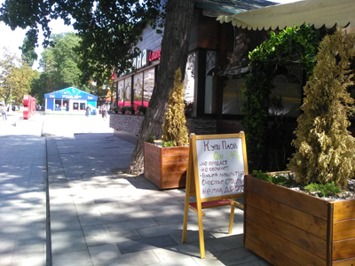
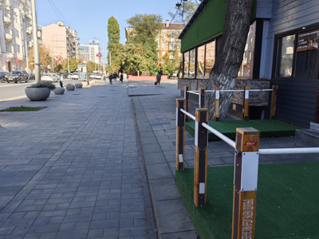

Гении маркетинга


Было время, когда реклама была более изобретательна, интересна и лучше запоминалась, чем сейчас. Да-да, раньше было лучше. Но в общем речь не об этом. Раньше на улицах нередко попадались необычные и забавные объявления и вывески. Вот одну такую рекламу я заприметил летом 2018 года на улице Большой Садовой в районе универмага «Солнышко». Напротив него есть небольшое здание, в котором в то время располагалась чайхана. Мини-штендер возле чайханы убеждал купить плов, утверждая, что тот недорого стоит, не обманет и будет тебя любить — словом, плов точно отличный парень. Меня повеселило это объявление, и я решил сфотографировать его на память.
Слева можно заметить объемные буквы «RUSSIA 2018», установленные как часть тематического оформления к Чемпионату мира по футболу, который проходил в России в 2018 году. А рядом стояла палатка официального магазина с атрибутикой Чемпионата. Все вместе это находилось на площадке перед бывшим кинотеатром «Ростов».


В сентябре 2026 года здесь уже, конечно, нет ничего футбольного. И на месте чайханы теперь какое-то другое кафе. Убрали кадки с пихтами, сделали площадки с искусственным газоном и поставили какие-то крайне эстетичные (сарказм) оградки. На столбиках еще фирменный логотип известной марки пива. Хотя издали выглядит так, будто просто кто-то наклейку от жвачки прилепил. И ожидаемо, нет того прекрасного объявления о надежном и хорошем товарище плове. Но хотя бы большое дерево рядом с кафе осталось на месте.